/* namsa-leuba - proofs */
12 plates. Deterministic overlays rendered by the composition-analysis skill.
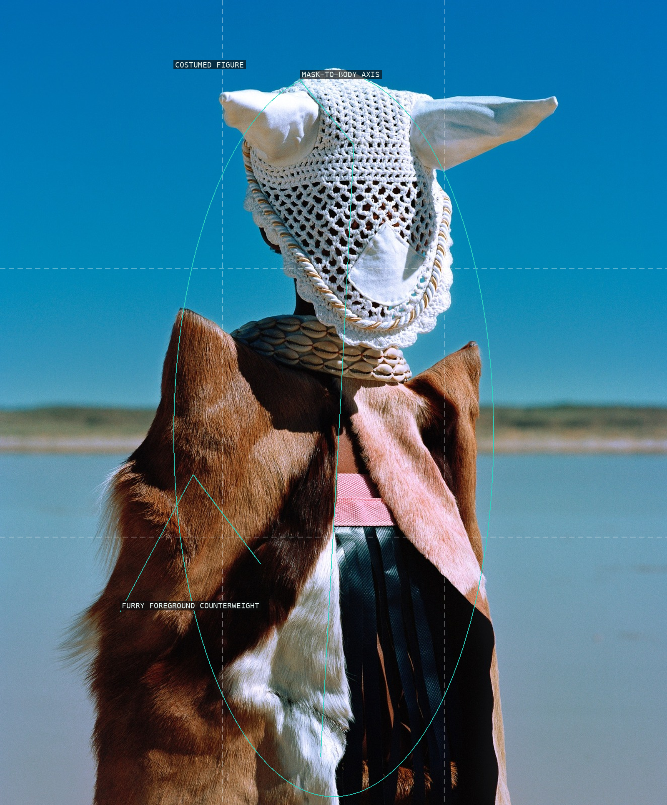
01-chunara
A masked vertical figure holds a sparse blue field against a low furry counterweight.
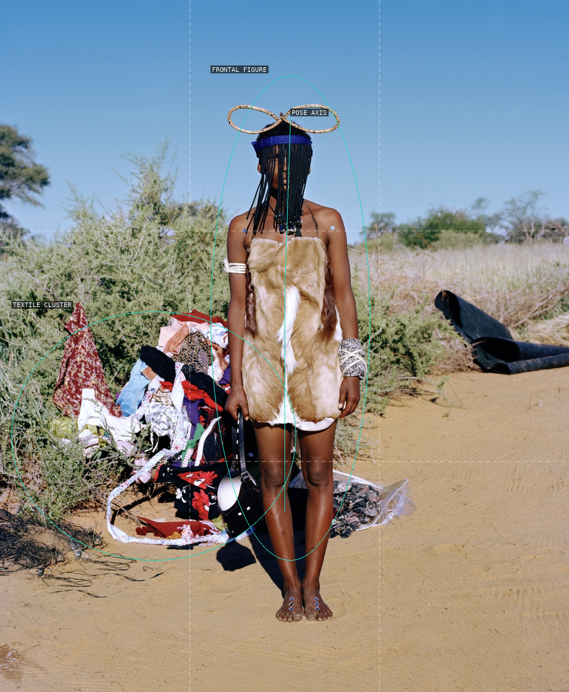
02-maria
A frontal body is held apart from the low, colourful textile cluster.
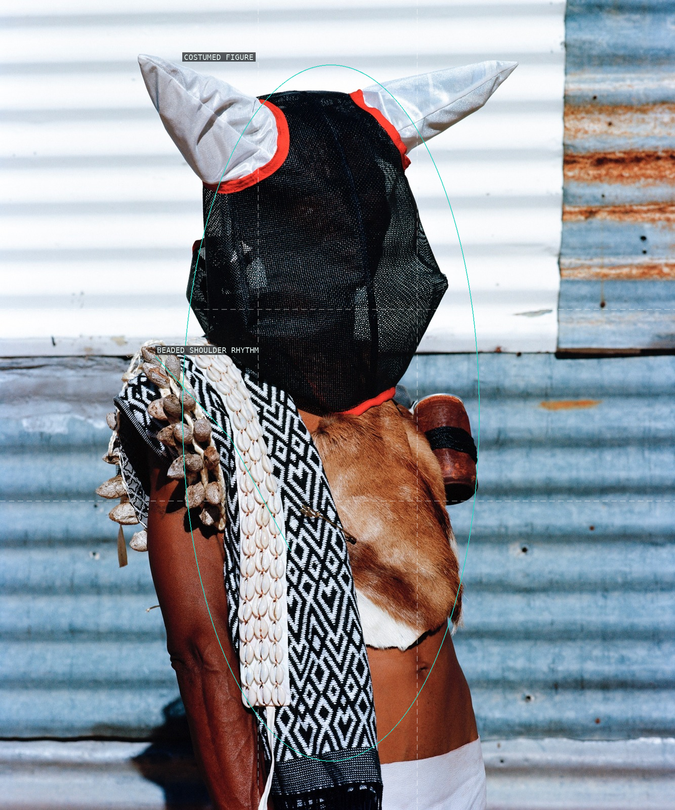
03-kokos
A compact costumed figure and hanging beadwork turn the body into a sequence of layered contours.
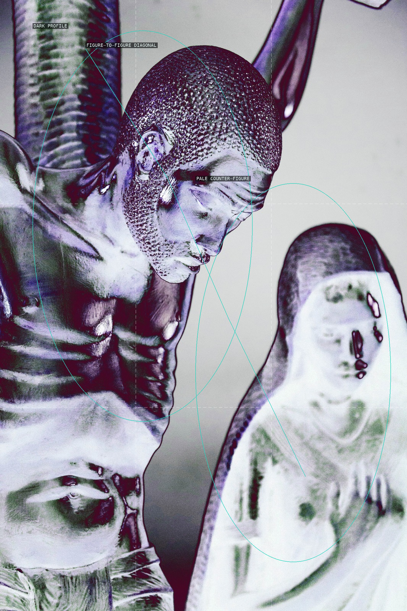
04-black-jc
Two contrasting figures form a steep, tightly cropped diagonal exchange.
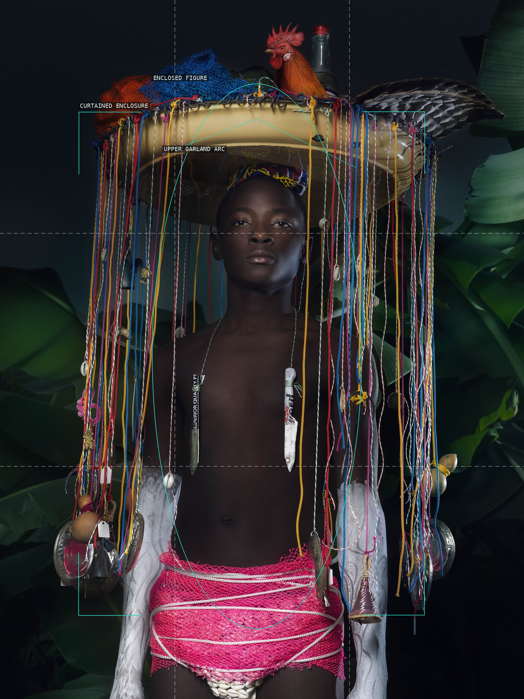
05-azaca
A repeated curtain enclosure makes the still central body feel ceremonial and tall.
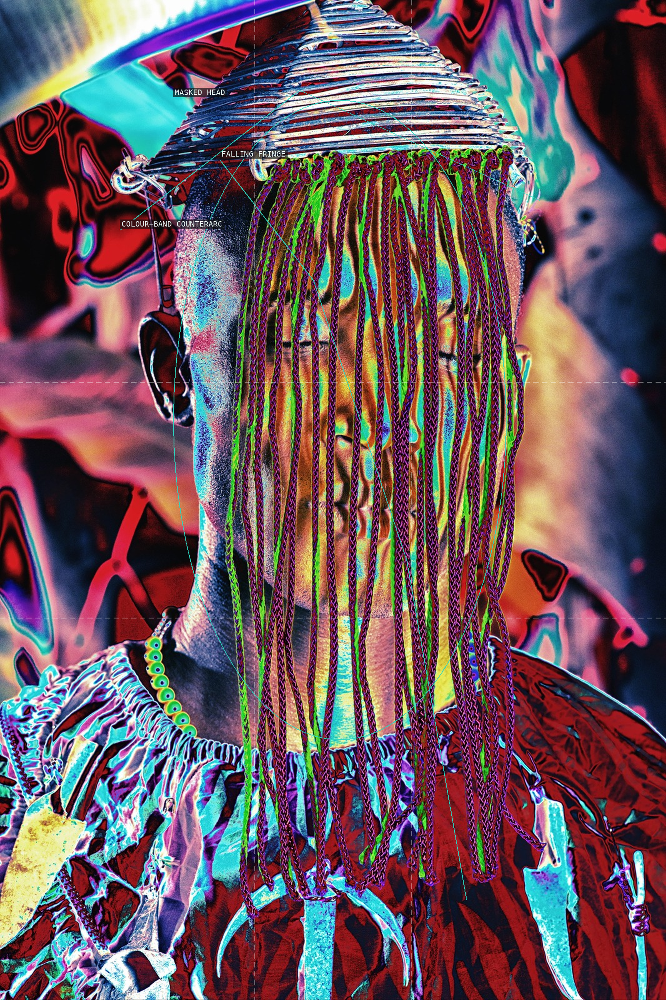
06-transe-a
Fringe falls through a compressed field of vivid, overlapping colour bands.
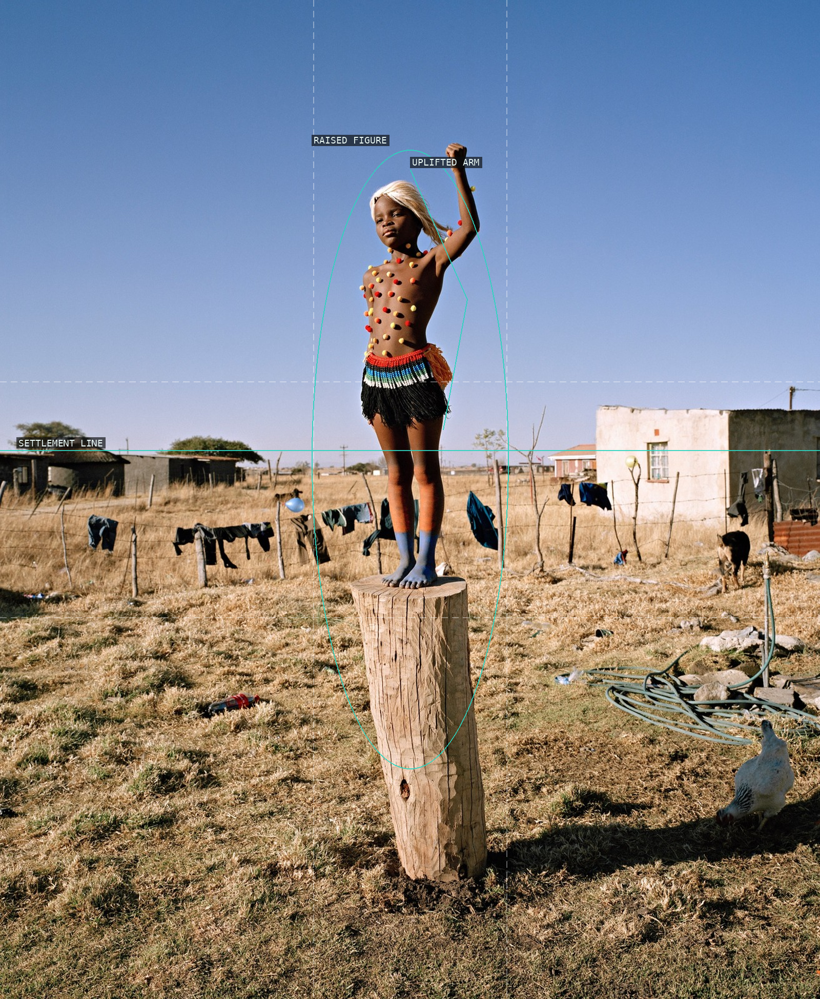
07-power
A raised arm breaks the broad sky-to-settlement split above a precarious stump.
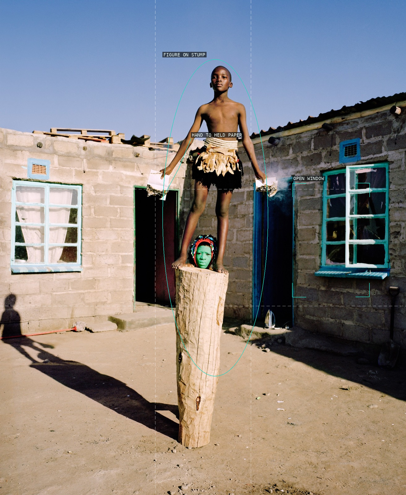
08-passports
A small elevated body, held document, and open window distribute attention across the yard.
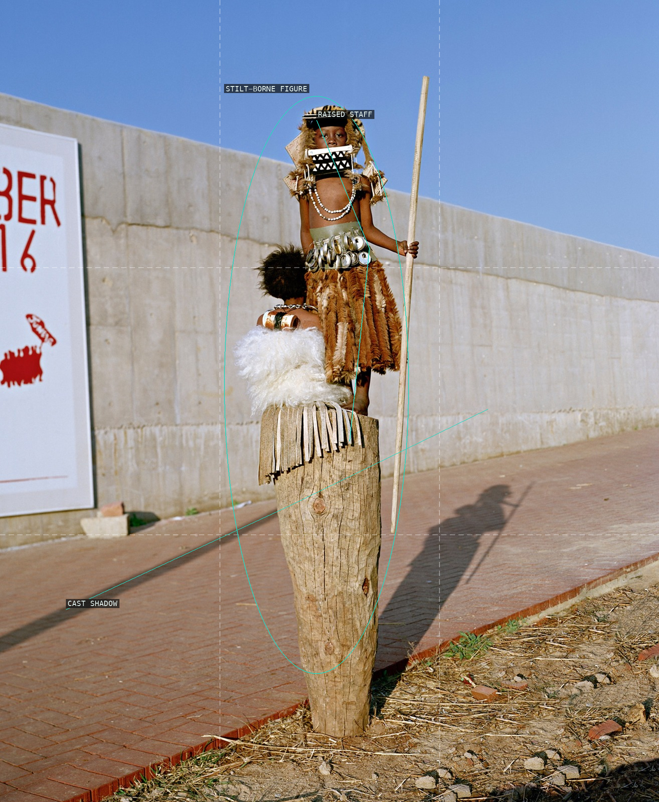
09-16-june
A towering figure and its long ground shadow make a staged action read across an open lot.
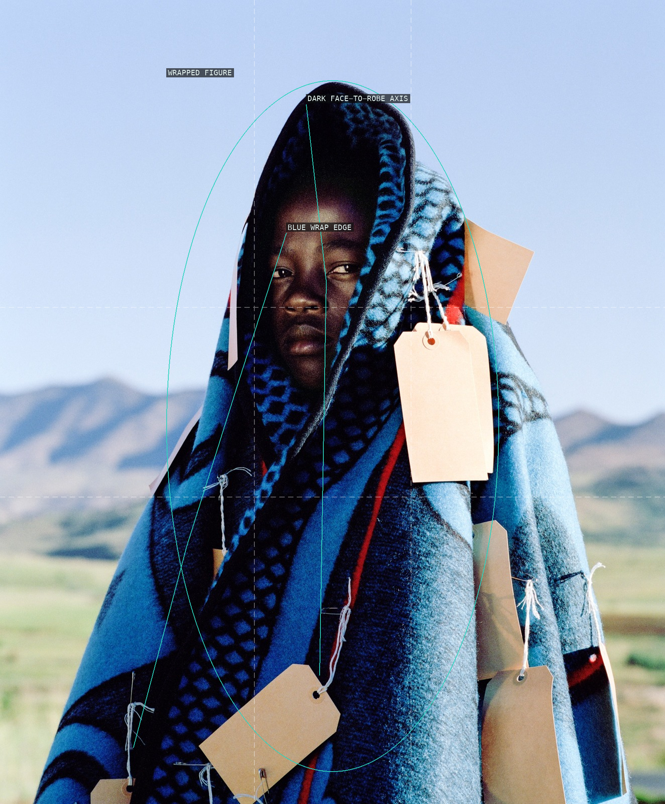
10-umfana
A dark face and blue wrap set a concentrated vertical figure against pale mountain air.
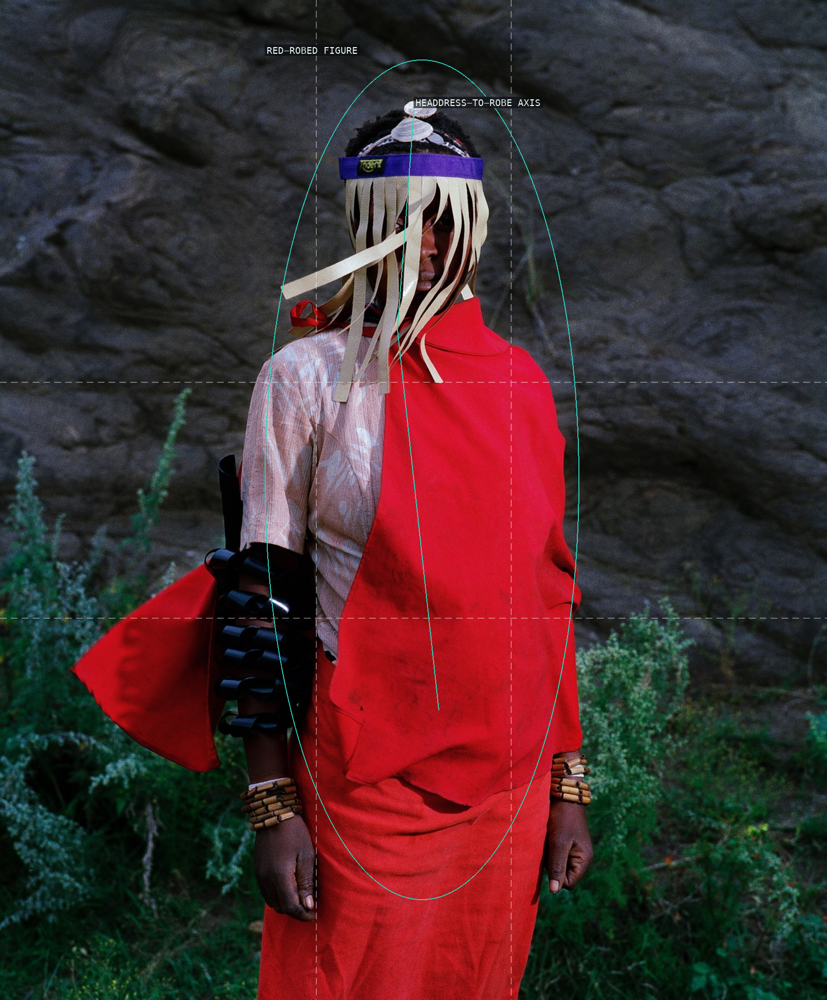
11-qkhwini
The bright red robe makes a vertical interruption against the dark rock field.
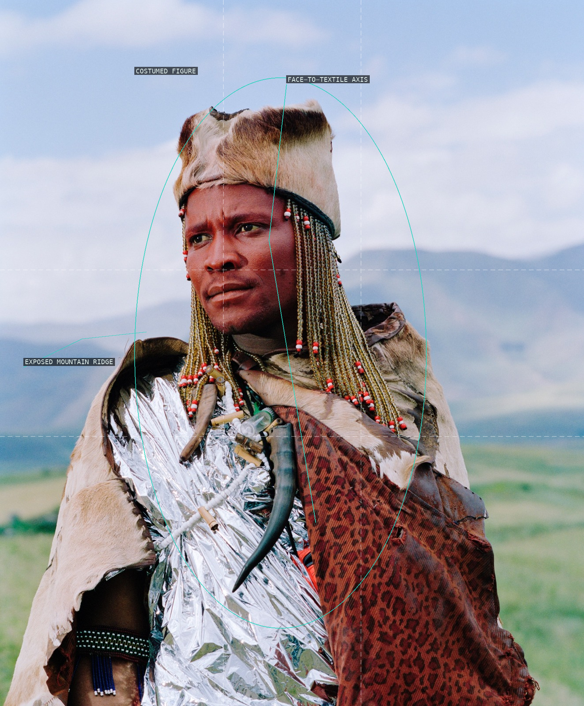
12-sangoma
A close costumed figure pushes against a shallow mountain-and-sky backdrop.